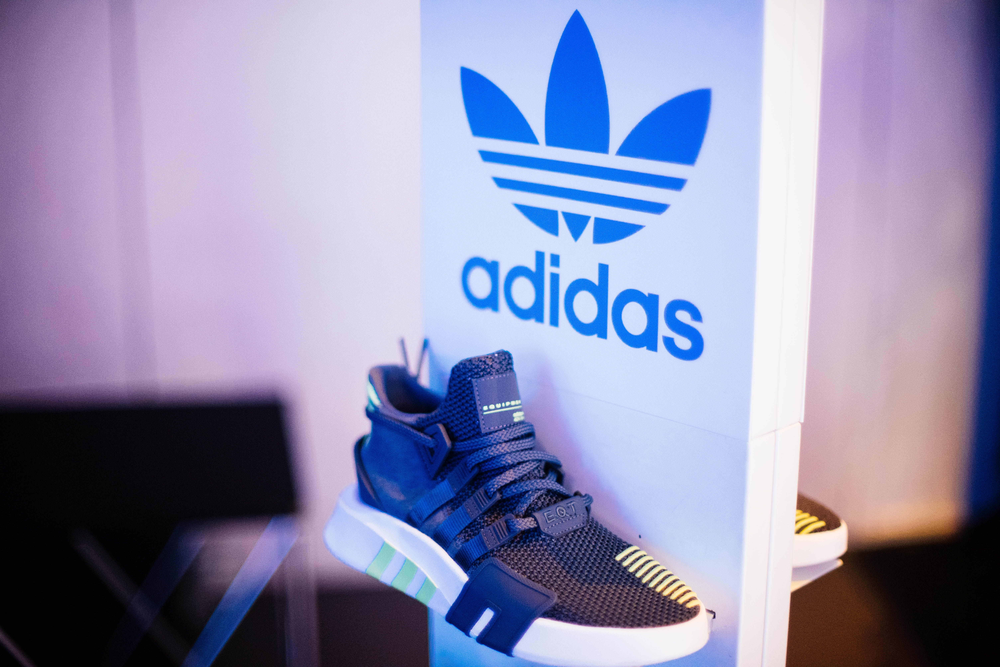

1960년대 중반부터 스포츠 의류, 1963년부터 공을 생산했는데 1970년 멕시코 월드컵에서 텔스타가 공식구로 사용된 이후 현재 모든 월드컵 경기에서 아디다스가 생산한 축구공이 쓰이게 되었다. 하지만 스포츠 선수들을 위한 제품만 생산해 일반인들에게 외면을 받아 1980년대부터 하락세를 걷기 시작했다. 1990년대 사업이 회복되면서 1997년 동계 스포츠용품 제조사인 살로몬을 인수해 회사명을 아디다스-살로몬 기업으로 변경했다가 2005년 살로몬을 핀란드의 아머 스포츠에 매각하면서 원래의 명칭 아디다스를 회복하였다. 아디다스의 신발이나 옷에는 아디다스 특유의 삼선(三線)이 들어있고, 아디다스 로고에도 이와 같은 디자인이 반영된다
